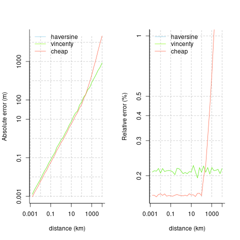

blah An ultra-lightweight, zero-dependency package for very fast calculation of geodesic distances. Main eponymous function, geodist(), accepts only one or two primary arguments, which must be rectangular objects with unambiguously labelled longitude and latitude columns (that is, some variant of lon/lat, or x/y).
n <- 50
x <- cbind (-10 + 20 * runif (n), -10 + 20 * runif (n))
y <- cbind (-10 + 20 * runif (2 * n), -10 + 20 * runif (2 * n))
colnames (x) <- colnames (y) <- c ("x", "y")
d0 <- geodist (x) # A 50-by-50 matrix
d1 <- geodist (x, y) # A 50-by-100 matrix
d2 <- geodist (x, sequential = TRUE) # Vector of length 49
d2 <- geodist (x, sequential = TRUE, pad = TRUE) # Vector of length 50Installation
You can install latest stable version of geodist from CRAN with:
install.packages("geodist") # current CRAN versionAlternatively, current development versions can be installed using any of the following options:
# install.packages("remotes")
remotes::install_git("https://git.sr.ht/~mpadge/geodist")
remotes::install_bitbucket("hypertidy/geodist")
remotes::install_gitlab("hypertidy/geodist")
remotes::install_github("hypertidy/geodist")Then load with
library (geodist)
packageVersion ("geodist")
#> [1] '0.0.7.16'Detailed Usage
Input(s) to the geodist() function can be in arbitrary rectangular format.
n <- 1e1
x <- tibble::tibble (x = -180 + 360 * runif (n),
y = -90 + 180 * runif (n))
dim (geodist (x))
#> Maximum distance is > 100km. The 'cheap' measure is inaccurate over such
#> large distances, you'd likely be better using a different 'measure'.
#> [1] 10 10
y <- tibble::tibble (x = -180 + 360 * runif (2 * n),
y = -90 + 180 * runif (2 * n))
dim (geodist (x, y))
#> Maximum distance is > 100km. The 'cheap' measure is inaccurate over such
#> large distances, you'd likely be better using a different 'measure'.
#> [1] 10 20
x <- cbind (-180 + 360 * runif (n),
-90 + 100 * runif (n),
seq (n), runif (n))
colnames (x) <- c ("lon", "lat", "a", "b")
dim (geodist (x))
#> Maximum distance is > 100km. The 'cheap' measure is inaccurate over such
#> large distances, you'd likely be better using a different 'measure'.
#> [1] 10 10All outputs are distances in metres, calculated with a variety of spherical and elliptical distance measures. Distance measures currently implemented are Haversine, Vincenty (spherical and elliptical)), the very fast mapbox cheap ruler (see their blog post), and the “reference” implementation of Karney (2013), as implemented in the package sf. (Note that geodist does not accept sf-format objects; the sf package itself should be used for that.) The mapbox cheap ruler algorithm is intended to provide approximate yet very fast distance calculations within small areas (tens to a few hundred kilometres across).
Benchmarks of geodesic accuracy
The geodist_benchmark() function - the only other function provided by the geodist package - compares the accuracy of the different metrics to the nanometre-accuracy standard of Karney (2013).
geodist_benchmark (lat = 30, d = 1000)
#> haversine vincenty cheap
#> absolute 0.722400335 0.722400335 0.543951117
#> relative 0.002056736 0.002056736 0.001597882All distances (d) are in metres, and all measures are accurate to within 1m over distances out to several km (at the chosen latitude of 30 degrees). The following plots compare the absolute and relative accuracies of the different distance measures implemented here. The mapbox cheap ruler algorithm is the most accurate for distances out to around 100km, beyond which it becomes extremely inaccurate. Average relative errors of Vincenty distances remain generally constant at around 0.2%, while relative errors of cheap-ruler distances out to 100km are around 0.16%.

Performance comparison
The following code demonstrates the relative speed advantages of the different distance measures implemented in the geodist package.
n <- 1e3
dx <- dy <- 0.01
x <- cbind (-100 + dx * runif (n), 20 + dy * runif (n))
y <- cbind (-100 + dx * runif (2 * n), 20 + dy * runif (2 * n))
colnames (x) <- colnames (y) <- c ("x", "y")
rbenchmark::benchmark (replications = 10, order = "test",
d1 <- geodist (x, measure = "cheap"),
d2 <- geodist (x, measure = "haversine"),
d3 <- geodist (x, measure = "vincenty"),
d4 <- geodist (x, measure = "geodesic")) [, 1:4]
#> test replications elapsed relative
#> 1 d1 <- geodist(x, measure = "cheap") 10 0.089 1.000
#> 2 d2 <- geodist(x, measure = "haversine") 10 0.183 2.056
#> 3 d3 <- geodist(x, measure = "vincenty") 10 0.245 2.753
#> 4 d4 <- geodist(x, measure = "geodesic") 10 3.439 38.640Geodesic distance calculation is available in the sf package. Comparing computation speeds requires conversion of sets of numeric lon-lat points to sf form with the following code:
require (magrittr)
x_to_sf <- function (x)
{
sapply (seq (nrow (x)), function (i)
sf::st_point (x [i, ]) %>%
sf::st_sfc ()) %>%
sf::st_sfc (crs = 4326)
}
n <- 1e2
x <- cbind (-180 + 360 * runif (n), -90 + 180 * runif (n))
colnames (x) <- c ("x", "y")
xsf <- x_to_sf (x)
sf_dist <- function (xsf) sf::st_distance (xsf, xsf)
geo_dist <- function (x) geodist (x, measure = "geodesic")
rbenchmark::benchmark (replications = 10, order = "test",
sf_dist (xsf),
geo_dist (x)) [, 1:4]
#> test replications elapsed relative
#> 2 geo_dist(x) 10 0.071 1.00
#> 1 sf_dist(xsf) 10 0.137 1.93Confirm that the two give almost identical results:
ds <- matrix (as.numeric (sf_dist (xsf)), nrow = length (xsf))
dg <- geodist (x, measure = "geodesic")
formatC (max (abs (ds - dg)), format = "e")
#> [1] "3.7717e+04"All results are in metres, so the two differ by only around 10 nanometres.
The geosphere package also offers sequential calculation which is benchmarked with the following code:
fgeodist <- function () geodist (x, measure = "vincenty", sequential = TRUE)
fgeosph <- function () geosphere::distVincentySphere (x)
rbenchmark::benchmark (replications = 10, order = "test",
fgeodist (),
fgeosph ()) [, 1:4]
#> test replications elapsed relative
#> 1 fgeodist() 10 0.021 1.00
#> 2 fgeosph() 10 0.038 1.81geodist is thus around 3 times faster than sf for highly accurate geodesic distance calculations, and around twice as fast as geosphere for calculation of sequential distances.
Test Results
date()
#> [1] "Mon Jan 24 10:45:33 2022"
devtools::test("tests/")
#> ℹ Loading geodist
#> ℹ Testing geodist
#> ✔ | F W S OK | Context
#> ⠏ | 0 | geodist ⠏ | 0 | misc tests ⠹ | 13 | misc tests ⠴ | 36 | misc tests ✔ | 52 | misc tests [0.3s]
#> ⠏ | 0 | georange ⠏ | 0 | georange ✔ | 37 | georange
#> ⠏ | 0 | input-format ⠏ | 0 | geodist input formats ✔ | 18 | geodist input formats
#> ⠏ | 0 | measures ⠏ | 0 | geodist measures ✔ | 18 | geodist measures
#>
#> ══ Results ═══════════════════════════════════════════════════════════════════════════════════════════════════════════
#> Duration: 0.5 s
#>
#> [ FAIL 0 | WARN 0 | SKIP 0 | PASS 125 ]Contributors
All contributions to this project are gratefully acknowledged using the allcontributors package following the all-contributors specification. Contributions of any kind are welcome!
Code
 mpadge |
 daniellemccool |